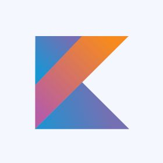
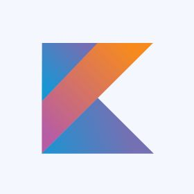

My journey into software development started with a Higher Certificate in IT Support Services, building a strong foundation in troubleshooting and client interaction. I later earned a Bachelor of Computer & Information Science in Application Development from Varsity College Waterfall, specializing in full-stack web and mobile development.
I have hands-on experience with JavaScript, Kotlin, C#, Docker, PostgreSQL, MongoDB, Angular, React, and Android Studio. My professional experience includes a learnership placement at Blue Label Distribution as a Call Interaction Agent, enhancing my problem-solving and communication skills. Additionally, I expanded my technical expertise through Neutrinos' web development training with Afrika Tikkun Services, focusing on modern web development, cloud technologies, and industry standards.